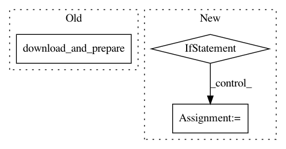

bc1856fe140e6a08198c4a72af94ee0543987847,tensorflow_datasets/testing/dataset_builder_testing.py,TestCase,test_download_and_prepare_as_dataset,#TestCase#,158
Before Change
extract=self._get_dl_extract_result,
manual_dir=self.example_dir,
):
self.builder.download_and_prepare(compute_stats=True)
with self._subTest("as_dataset"):
self._assertAsDataset(self.builder)
After Change
@tf.contrib.eager.run_test_in_graph_and_eager_modes()
def test_download_and_prepare_as_dataset(self):
configs = self.builder.BUILDER_CONFIGS
if configs:
for config in configs:
with self._subTest(config.name):
print("Testing config %s" % config.name)
builder = self._make_builder(config=config)
self._download_and_prepare_as_dataset(builder)
else:
self._download_and_prepare_as_dataset(self.builder)
def _download_and_prepare_as_dataset(self, builder):
with tf.test.mock.patch.multiple(
"tensorflow_datasets.core.download.DownloadManager",
download_and_extract=self._get_dl_extract_result,
In pattern: SUPERPATTERN
Frequency: 3
Non-data size: 3
Instances
Project Name: tensorflow/datasets
Commit Name: bc1856fe140e6a08198c4a72af94ee0543987847
Time: 2018-12-10
Author: rsepassi@google.com
File Name: tensorflow_datasets/testing/dataset_builder_testing.py
Class Name: TestCase
Method Name: test_download_and_prepare_as_dataset
Project Name: tensorflow/datasets
Commit Name: 2b867a66ea0938ea281b5e6ea37ae3e18e15ae19
Time: 2018-12-04
Author: epot@google.com
File Name: tensorflow_datasets/testing/dataset_builder_testing.py
Class Name: TestCase
Method Name: test_download_and_prepare_as_dataset
Project Name: tensorflow/datasets
Commit Name: bc1856fe140e6a08198c4a72af94ee0543987847
Time: 2018-12-10
Author: rsepassi@google.com
File Name: tensorflow_datasets/scripts/download_and_prepare.py
Class Name:
Method Name: main